The scientist's urge to investigate, like the faith of the devout or the inspiration of the artist, is an expression of mankind's longing for something fixed, something at rest in the universal whirl: God, Beauty, Truth. Truth is what the scientist aims at. He finds nothing at rest, nothing enduring, in the universe. Not everything is knowable, still less predictable. But the mind of man is capable of grasping and understanding at least a part of Creation; amid the flight of phenomena stands the immutable pole of law.
The scattering of waves is described by adding an inhomogeneous term (a \(\delta\) function) to the Helmholtz equation, which is solved by the Green's function. Green's functions in 1D, 2D, and 3D are developed in the first two sections. Reciprocity's constraints on the Green's function for situations in which there exist boundaries are then discussed. See here for Dr. Hamilton's notes on how to expand \(G\) using normal mode expansions (not covered in the lecture). The Helmholtz-Kirchhoff integral is derived. It is then shown that the multipole expansion can be expressed entirely in terms of Green's functions and their derivatives. The exact theory of scattering is then derived. Three useful approximations of of this exact theory are then derived: far-field, Born, and Rayleigh. The remainder of the course applies these approximations to the scattering of sound by bubbles.
Contents:
Consider a linear differential operator \(\mathcal{L}\) (e.g., \(\Laplacian + k^2\)). A Green's function \(g\) satisfies \begin{align}\label{1green}\tag{1} \Ell\{g(\vec{r}|\vec{r}_0)\} = -\delta(\vec{r} - \vec{r}_0)\,. \end{align} Now consider the general inhomogeneous differential equation \begin{align}\label{2green}\tag{2} \Ell \{\phi(\vec{r})\} = -f(\vec{r})\,. \end{align} Let the right-hand side of Eq. \eqref{2green} be written in terms of an integral over a delta function, by the sifting property: \begin{align*} f(\vec{r}) = \int f(\vec{r}_0)\delta(\vec{r} - \vec{r_0}) dV_0\,. \end{align*} Then Eq. \eqref{2green} becomes \begin{align*} \Ell\{\phi(\vec{r})\} &= -\int f(\vec{r}_0)\delta(\vec{r} - \vec{r_0}) dV_0. \end{align*} Replacing \(-\delta(\vec{r}-\vec{r}_0)\) with the right-hand side of Eq. \eqref{1green}, Eq. \eqref{2green} becomes \begin{align*} \Ell\{\phi(\vec{r})\} &= \int f(\vec{r}_0) \Ell\{g(\vec{r}|\vec{r}_0)\} dV_0\\ &= \Ell\left\{\int f(\vec{r}_0)g(\vec{r}|\vec{r}_0) dV_0\right\}\,, \end{align*} where \(\mathcal{L}\) is removed from the integral by the linearity of the integral operation. The particular solution of Eq. \eqref{2green} is therefore \begin{align*} \phi(\vec{r}) = \int f(\vec{r_0}) g(\vec{r}|\vec{r}_0) dV_0 \end{align*} where \(g(\vec{r}|\vec{r}_0)\) is the so-called free space Green's function is defined by Eq. \eqref{1green}. \(g\) satisfies \(\Ell\{g(\vec{r}|\vec{r}_0)\} = 0\) everywhere except for at \(\vec{r} = \vec{r}_0\).
The "\(-\)" sign in Eq. \eqref{1green} is motivated by electrostatics. Gauss's law states that \(\divergence \vec{E} = \rho/\epsilon_0\), where \(\vec{E}\) is the electric field, \(\rho\) is the charge density, and \(\epsilon_0\) is the permittivity of free space. Meanwhile, the definition of the electric field is given in terms of the electric potential as \(\vec{E} = -\gradient V\). Combining these equations leads to Poisson's equation, which has a negative right-hand side: \(\Laplacian V = -\rho/\epsilon_0\). Thus it proves convenient in electrostatics to let \(g(\vec{r}|\vec{r}_0)\) solve the inhomogeneous Poisson equation with negative right-hand side.
1D and 3D cases are discussed first. Attention is then turned to the more challenging 2D case, which is handled by modifying the 3D result.
Consider the inhomogeneous Helmholtz equation in 1D, for which \(\Ell = \partial^2/\partial x^2 + k^2\): \begin{align}\label{1D1}\tag{1} \frac{\partial^2 g}{\partial x^2} + k^2 g = -\delta(x-x_0)\,. \end{align} The solution \(g(x|x_0)\) must have the form \begin{align*} g(x|x_0) &= A e^{ik(x-x_0)}\,, \quad x > x_0\\ &= A e^{-ik(x-x_0)}\,, \quad x < x_0\,, \end{align*} which can be written as \begin{align}\label{1D2}\tag{2} g(x|x_0) = Ae^{ik|x-x_0|}, \quad x\neq x_0\,. \end{align} To calculate the constant \(A\), Eq. \eqref{1D1} is integrated: \begin{align}\label{1D3}\tag{3} \frac{\partial g}{\partial x}\bigg\rvert_{x_0-\epsilon}^{x_0+\epsilon} + k^2\int_{x_0-\epsilon}^{x_0 + \epsilon} g dx = -1\,. \end{align} The first term in Eq. \eqref{1D3} is \begin{align*} \frac{\partial g}{\partial x}\bigg\rvert_{x_0-\epsilon}^{x_0+\epsilon} &= ikA e^{ik\epsilon} - (-ik) A e^{ik\epsilon} \\ &= 2ikA\,, \quad \epsilon \to 0\,. \end{align*} In the second term of Eq. \eqref{1D3}, the integral is \begin{align*} \int_{x_0-\epsilon}^{x_0 + \epsilon} g dx &= \left(\int_{x_0-\epsilon}^{x_0} + \int_{x_0}^{x_0 + \epsilon} \right) g dx\\ &= \frac{A}{ik} (1 - e^{ik\epsilon}) - \frac{A}{ik}(e^{-ik\epsilon} -1)\\ &\to 0\,, \quad \epsilon\to 0\,. \end{align*} Therefore the constant \(A\) is found to be \begin{align*} A = -\frac{1}{2ik}\,, \end{align*} so the Green's function of the 1D Helmholtz equation is \begin{align} \boxed{g(x|x_0) = \frac{i}{2k} e^{ik|x-x_0|}\,.} \end{align}
The inhomogeneous Helmholtz equation is now \begin{align}\label{3D1}\tag{1} \Laplacian g + k^2 g = -\delta(\vec{r} - \vec{r}_0)\,. \end{align} The solution is supposed to have the form \begin{align*} g(\vec{r}|\vec{r}_0) = A\frac{e^{ikR}}{R}\,, \end{align*} where \[R = |\vec{r}- \vec{r}_0| = \sqrt{(x-x_0)^2 + (y-y_0)^2 + (z-z_0)^2}\,.\] To determine the constant \(A\), Eq. \eqref{3D1} is integrated over the volume of a sphere of radius \(\epsilon\) centered at \(\vec{r} = \vec{r}_0\). Noting that the surface area of this integral is \(S = 4\pi \epsilon^2\), its volume is \(V = \frac{4}{3}\pi \epsilon^3\), and \(dV = 4\pi R^2 dR\), the integral is taken, \begin{align*} \int \Laplacian g dV + k^2 \int g dV = -1\,. \end{align*} The second integral is easy to take: \begin{align*} \int g dV &= \int_{0}^{\epsilon} A \frac{e^{ikR}}{R} 4\pi R^2 dR\\ &= 4\pi A \int_{0}^\epsilon e^{ikR} R dR\\ &= 4\pi A \frac{e^{ikR}}{R} (R - 1/ik)\bigg\rvert_{0}^\epsilon \to 0\,,\quad \epsilon \to 0\,. \end{align*} Meanwhile, for the first integral, Gauss's theorem is invoked: \begin{align*} \int \Laplacian g dV &= \int \divergence (\gradient g) dV\\ &= \oint (\gradient g) \cdot d\vec{S}\\ &= \oint \frac{\partial g}{\partial R} dS\\ &= \oint \left(-\frac{1}{R} + ik\right) A \frac{e^{ikR}}{R}\, dS\\ &= \left(-\frac{1}{\epsilon} + ik\right) A \frac{e^{ik\epsilon}}{\epsilon} 4\pi \epsilon^2\\ &=-4\pi A\,,\quad \epsilon\to0\,. \end{align*} Thus \(A\) is determined to be \(1/4\pi\). The Green's function in 3D is therefore \begin{align*} \boxed{g(\vec{r}|\vec{r}_0) \frac{e^{ik|\vec{r}-\vec{r}_0|}}{4\pi |\vec{r} - \vec{r}_0|} = \frac{e^{ikR}}{4\pi R}\,.} \end{align*}
The approach presented here uses the result derived above for the 3D Green's function of the Helmholtz equation. However, it can more straightforwardly be derived by applying the same approach taken in the 3D case, only using Green's theorem in this form, instead of the 3D divergence theorem. This approach is assigned as a homework problem.
In 2D, the inhomogeneous Helmholtz equation in Cartesian coordinates is \begin{align*} \left(\frac{\partial^2}{\partial x^2} + \frac{\partial^2}{\partial y^2}\right)g + k^2 = -\delta(x-x_0)\delta(y-y_0)\,. \end{align*} Equivalently, the inhomogeneous Helmholtz equation can be written in 3D as \begin{align}\label{2D1}\tag{1} \Laplacian g + k^2 g = - f(x,y)\,, \end{align} where the Laplacian is the 3D operator, and where \[f(x,y) = \delta(x-x_0)\delta(y-y_0)\,.\] The 3D solution of Eq. \eqref{2D1} was found to be \begin{align*} g(\vecrho|\vecrho_0) &= \int f(x_0,y_0) g(\vec{r|\vec{r}_1}) dV_1\,,\quad g(\vec{r}|\vec{r}_1) = \frac{e^{ik|\vec{r}-\vec{r}_1|}}{4\pi |\vec{r} - \vec{r}_1|}\,. \end{align*} Thus in 2D Cartesian coordinates, the Green's function is \begin{align*} g(\vecrho|\vecrho_0) &= \int \delta(x_1 - x_0)\delta(y_1 - y_0) \frac{e^{ik\sqrt{(x-x_1)^2 + (y-y_1)^2 + (z-z_1)^2}}}{4\pi \sqrt{(x-x_1)^2 + (y-y_1)^2 + (z-z_1)^2}} dV_1\,,\\ &= \frac{1}{4\pi} \int_{-\infty}^\infty \frac{e^{ik\sqrt{(x-x_0)^2 + (y-y_0)^2 + (z-z_1)^2}}}{4\pi \sqrt{(x-x_0)^2 + (y-y_0)^2 + (z-z_1)^2}} dz_1\,,\\ \end{align*} where \(dV_1 = dx_1 dy_1 dz_1\). Note that \((x-x_0)^2 + (y-y_0)^2 = |\vecrho -\vecrho_0|^2\), as illustrated below:
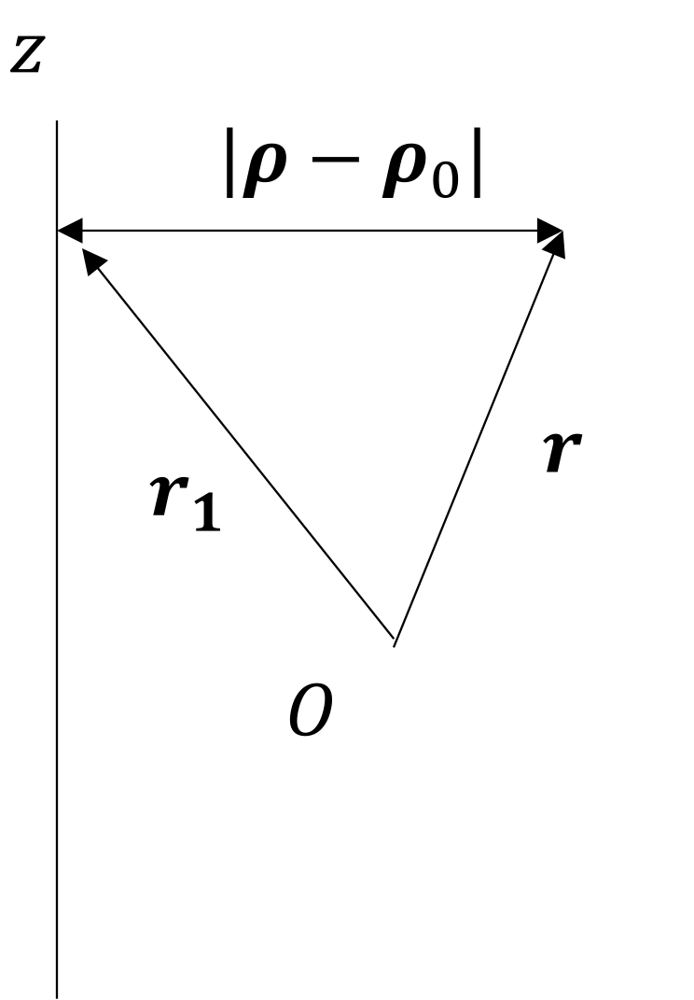
Employing the change-of-variables \begin{align*} k(z-z_1) &= -t\,, \quad dz_1 = \frac{dt}{k}\,, \end{align*} the integral above becomes \begin{align*} g(\vecrho|\vecrho_0) = \frac{1}{4\pi} \int_{-\infty}^\infty \frac{e^{ik\sqrt{k^2|\vecrho-\vecrho_0|^2 + t^2}}}{4\pi \sqrt{k^2|\vecrho-\vecrho_0|^2 + t^2}} dt\,. \end{align*} Now note that an integral representation of the \(0\)th order Hankel function of the first kind is \begin{align*} H_0^{(1)} (x) = \frac{1}{i\pi}\int_{-\infty}^{\infty} \frac{e^{i\sqrt{x^2 + t^2}}}{\sqrt{z^2 + t^2}}\, dt\,. \end{align*} The 2D Green's function is therefore \begin{align*} \boxed{g(\vecrho|\vecrho_0) = \frac{i}{4} H_0^{(1)} (k|\vecrho - \vecrho_0|)\,.} \end{align*} Note that since \begin{align*} H_0^{(1)} (x) \simeq \sqrt{\frac{2}{\pi z}} e^{i(z-\pi/4)}\,,\quad |z| \gg 1\,, \end{align*} the 2D Green's function in the far field is \begin{align*} g(\vecrho|\vecrho_0) \simeq \frac{e^{i\pi/4}}{\sqrt{8\pi}} \frac{e^{ik|\vecrho - \vecrho_0|}}{\sqrt{k|\vecrho - \vecrho_0|}}\,, \quad k|\vecrho-\vecrho_0| \gg 1\,. \end{align*} The above approximation of the 2D Green's function of the Helmholtz equation is often a starting-point for the ocean acousticians, who always seem to work in the far field.
Reciprocity is the invariance under the exchange of source and receiver, which corresponds to the exchange of \(\vec{r}\) and \(\vec{r}_0\) in a Green's function. The free space Green's function \(g(\vec{r}|\vec{r}_0)\) of the the Helmholtz equation in 1D, 2D, and 3D is always reciprocal because \(\vec{r}\) and \(\vec{r}_0\) always appear in the combination \(|\vec{r} - \vec{r}_0|\) which is equal to \(|\vec{r}_0 - \vec{r}|\). However, the issue of reciprocity becomes more subtle when considering the presence of boundaries. Thus this discussion starts with some remarks about boundaries when solving an inhomogeneous Helmholtz equation.
Consider a Green's function that satisfies \begin{align} \label{BC1}\tag{1} \Laplacian G + k^2 G = -\delta(\vec{r} - \vec{r}_0)\,, \end{align} where (following Morse and Ingard's notation, Eq. 7.1.15) \[G(\vec{r}|\vec{r}_0) = g(\vec{r}|\vec{r}_0) + h(\vec{r})\] where \begin{align*} g(\vec{r}|\vec{r}_0) = \frac{e^{ikR}}{4\pi R}\,, R = |\vec{r} - \vec{r}_0|\,, \end{align*} and where \(h(\vec{r})\) is the homogeneous solution, i.e., \begin{align}\label{BC2}\tag{2} \Laplacian h + k^2 h = 0\,. \end{align} That is to say, \(h\) is added to \(g\) to make the Green's function \(G\) satisfy not only \(1\) but also any boundary condition(s) involved in a physical situation.
Let \(h(\vec{r}) = g(\vec{r}| x_0,y_0,-z_0)\). Since the image \(h(\vec{r})\) is in the half-space \(z < 0\), Eq. \eqref{BC2} is satisfied in the half-space \(z > 0 \) containing the sound field, and thus \(G\) is satisfied by both Eq. \eqref{BC1} and the boundary condition \begin{align*} \frac{\partial G}{\partial z}\bigg\rvert_{z=0} = 0\,. \end{align*}
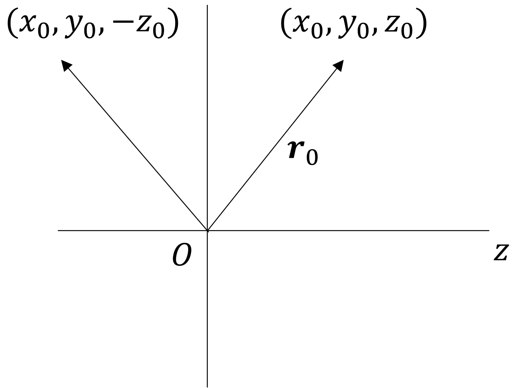
To introduce the concept of reciprocity, consider a sound field is enclosed by a surface \(S\) with two source points at positions \(\vec{r}_1\) and \(\vec{r}_2\), as illustrated below:
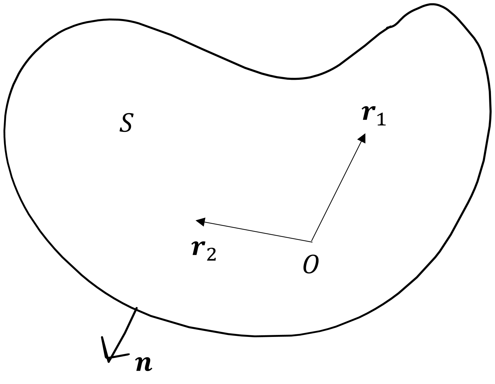
At these positions, \begin{align} (\Laplacian + k^2)G(\vec{r}|\vec{r}_1) &= -\delta(\vec{r} - \vec{r}_1) \label{recip1}\tag{a}\\ (\Laplacian + k^2)G(\vec{r}|\vec{r}_2) &= -\delta(\vec{r} - \vec{r}_2)\,.\label{recip2}\tag{b} \end{align} Now the following volume integral is calculated: \begin{align*} \int_V \{G(\vec{r}|\vec{r}_2) [\text{Eq. } (a)] - G(\vec{r}|\vec{r}_1) [\text{Eq. } (b)]\} dV\,. \end{align*} The \(k^2\) terms cancel, leaving \begin{align*} \int_V \{G(\vec{r}|\vec{r}_2) \Laplacian G(\vec{r}|\vec{r}_1) - G(\vec{r}|\vec{r}_1) \Laplacian G(\vec{r}|\vec{r}_r) dV = -G(\vec{r}_1 |\vec{r}_2) + G(\vec{r}_2|\vec{r}_1)\,. \end{align*} By the divergence theorem, \begin{align}\label{recip3}\tag{3} \oint \left[G(\vec{r}|\vec{r}_2) \frac{\partial G(\vec{r}|\vec{r}_1)}{\partial n} - G(\vec{r}|\vec{r}_1) \frac{\partial G(\vec{r}|\vec{r}_2)}{\partial n} \right] dS = -G(\vec{r}_1 |\vec{r}_2) + G(\vec{r}_2|\vec{r}_1)\,. \end{align} The statement of reciprocity is that \(G(\vec{r}_1 | \vec{r_2}) = G(\vec{r}_2|\vec{r}_1)\), which corresponds to the the left-hand side of Eq. \eqref{recip3} vanishing. This is achieved on \(S\) for the three following conditions: \begin{align*} G &= 0\,,\quad \text{Dirichlet, free surface}\\ \frac{\partial G}{\partial n} &= 0\,,\quad \text{Neumann, rigid surface}\\ \frac{G}{\partial G/\partial n} &= \text{const.}\,,\quad \text{can be complex} \end{align*} The third condition includes the first two conditions and corresponds to \begin{align*} \frac{p_\omega}{\vec{u}_\omega \cdot \vec{n}} = Z = \text{ acoustic impedance}\,, \end{align*} which is said to correspond to a ''locally reacting'' medium, which does not support wave motion. For more insight, note that from the space- and time-harmonic momentum equation, \begin{align*} -ik\rho_0c_0 \vec{u}_\omega \cdot \vec{n} + \frac{\partial p_\omega}{\partial n} = 0\,. \end{align*} The condition \(\frac{G}{\partial G/\partial n} \) therefore becomes \[\frac{G}{\partial G/\partial n} = \frac{Z}{ik\rho_0c_0}.\]
Thus, if the surfaces are locally reacting (or at \(r = \infty\)) and \(G\) satisfies any of the above conditions, then \[\boxed{G(\vec{r}_1 | \vec{r}_2) = G(\vec{r}_2 | \vec{r}_1)},\] which implies that the source and receiver can be reversed in space without changing the measured sound.
The Helmholtz-Kirchhoff integral is a starting-point for the study of both scattering and diffraction. It calculates the field radiated by an arbitrary volume and/or surface distribution of scattering or radiating elements. It is shown in the example below that the Helmholtz-Kirchhoff integral can be used to derive the first Rayleigh integral, which was previously derived in this course using Fourier acoustics and the convolution theorem. The application of the Helmholtz-Kirchhoff integral to scattering will be seen in the following section.
Begin by considering two inhomogeneous Helmholtz equations: \begin{align} (\Laplacian + k^2)p_\omega(\vec{r}) &= -f(\vec{r}) \label{helm1}\tag{1}\\ (\Laplacian + k^2)G(\vec{r}|\vec{r}_0) &= -\delta(\vec{r} - \vec{r_0}) \label{helm2}\tag{2} \end{align} Take \(G\) times Eq. \eqref{helm1} minus \( p_\omega\) times Eq. \eqref{helm2}: \begin{align} G(\vec{r}|\vec{r}_0) \Laplacian p_\omega(\vec{r}) - p_\omega(\vec{r}) \Laplacian G(\vec{r}|\vec{r}_0) &= -G(\vec{r}|\vec{r}_0) f(\vec{r}) + p_\omega(r) \delta(\vec{r}- \vec{r}_0)\,. \label{helm3}\tag{3} \end{align} Now rename \(\vec{r}\) with \(\vec{r}_0\) and visa versa, and require \(G\) to be reciprocal whether or not any boundary conditions are satisfied, e.g., can let \(G = g = e^{ikR}/4\pi R\): \begin{align*} G(\vec{r}|\vec{r}_0) = G(\vec{r}_0|\vec{r})\,. \end{align*} Now take \(\int_{V}[\text{Eq. (3)}] dV_0\): \begin{align*} \int &[G(\vec{r}|\vec{r}_0) \Laplacian_{\!\!\!0} p_\omega(\vec{r}_0) - p_\omega (\vec{r}_0) \Laplacian_{\!\!\!0} G(\vec{r}|\vec{r}_0) dV_0]\\ &= - \iiint G(\vec{r}|\vec{r}_0) f(\vec{r}_0) dV_0 + \int p_\omega(\vec{r}_0) \delta(\vec{r}-\vec{r}_0)dV_0\,, \end{align*} Now use Gauss's theorem to solve (implicitly) for \(p_\omega(\vec{r})\): \begin{align} \boxed{p_\omega(\vec{r}) = \int f(\vec{r}) G(\vec{r}|\vec{r}_0)dV_0 + \oint \bigg[G(\vec{r}|\vec{r}_0) \frac{\partial p_\omega(\vec{r}_0)}{\partial n_0} - p_\omega(\vec{r_0})\frac{\partial G(\vec{r}|\vec{r}_0)}{\partial n_0}\bigg] dS_0 \tag{5}\label{helm5}} \end{align} where \(\vec{n}\) is the outward unit normal. If \begin{align*} \frac{p_\omega}{\partial p_\omega/\partial n_0} &= \frac{G}{\partial G/\partial n_0} = \frac{Z}{ik\rho_0c_0}\,, \end{align*} then the surface integral vanishes, and the complete solution is \begin{align*} p_\omega(\vec{r}) = \int_V f(\vec{r}_0) G(\vec{r}|\vec{r}_0)dV_0\,. \end{align*}
Consider the velocity source (\(z =0\)) \begin{align*} u(x,y,t) = u_0(x,y)\, e^{-i\omega t}\,. \end{align*} Then the derivative \(\partial/\partial n_0\) is simply \(-\partial/\partial z_0\) on \(S_0\). Also assume there are no source inside the volume. Then \(f(\vec{r}) = 0\). Further, suppose the field vanishes at infinity.
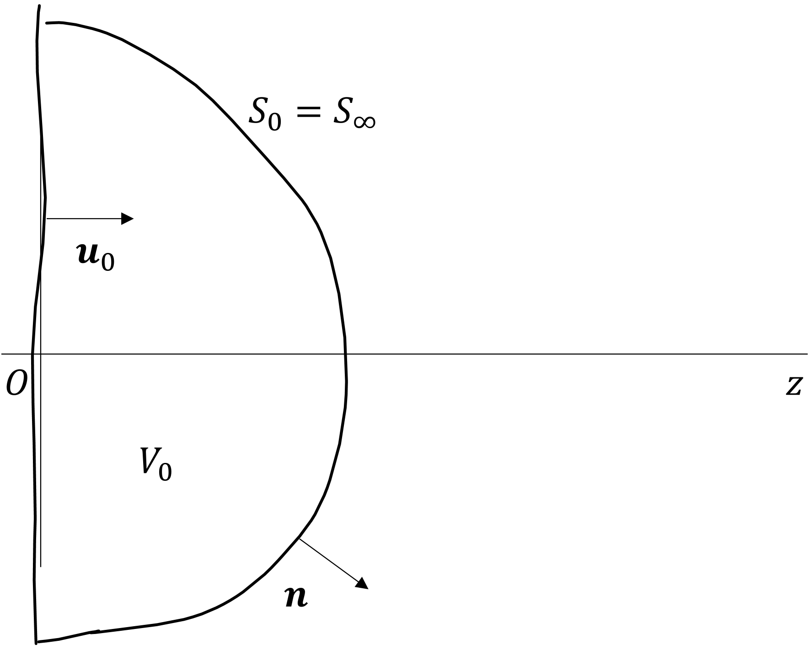
Thus the field is, from Eq. \eqref{helm5}, \begin{align}\label{rayleigh1}\tag{1} p_\omega(\vec{r}) = -\iint_{-\infty}^\infty \bigg[ G(\vec{r}|\vec{r}_0) \frac{\partial p_\omega(\vec{r}_0)}{\partial z_0} - p_\omega(\vec{r_0})\frac{\partial G(\vec{r}|\vec{r}_0)}{\partial z_0} \bigg]dx_0 dy_0\,. \end{align} Since an equation that maps particle velocity to pressure is desired, the momentum equation is invoked: \begin{align}\label{rayleigh2}\tag{2} \frac{\partial p_\omega}{\partial z_0}\bigg\rvert_{z_0 = 0} = ik\rho_0c_0 u_0(x_0,y_0) \,. \end{align} Meanwhile, it is desired to eliminate \(p_\omega(\vec{r}_0)\) from the integral. As such, \(G\) is chosen such that \begin{align} \frac{\partial G}{\partial z_0}\bigg\rvert_{z_0 =0} =0\,, \tag{3}\label{rayleigh3} \end{align} which is satisfied for the choice \begin{align*} G(\vec{r}|\vec{r}_0) &= g(\vec{r}| x_0,y_0,z_0) + g(\vec{r}|x_0, y_0,-z_0)\,, \end{align*} where \(g(\vec{r}|\vec{r}_0) = e^{ikR}/4\pi R\) is the free-space Green's function. This was shown in Acoustics II; see problem 6 on my quals site for the math. Thus in the source plane \(z_0 = 0\), \begin{align} G(\vec{r}| x_0,y_0,0) = 2g(\vec{r}|x_0,y_0,0) = \frac{e^{ikR}}{2\pi R} \label{rayleigh4}\tag{4}\,, \end{align} where \[R = \sqrt{(x-x_0)^2 + (y-y_0)^2 + z^2},\] Substituting Eqs. \eqref{rayleigh2}-\eqref{rayleigh4} in Eq. \eqref{rayleigh1} results in the first Rayleigh integral: \begin{align*} p_\omega(x,y,z) &= \frac{-ik\rho_0c_0}{2\pi} \iint_{-\infty}^\infty u_0(x_0,y_0) \frac{e^{ikR}}{R} dx_0dy_0\,. \end{align*}
It proves expedient to introduce the multipole expansion, since monopoles and dipoles arise in the theory of scattering to follow. The multipole expansion was covered in Acoustics II in the context of radiation from spherical and cylindrical sources [e.g., a pulsating sphere, shaking sphere, bipolar pulsating sphere, pulsating cylinder, shaking cylinder (string), etc.], while the emphasis here is on how monopolar and dipolar fields arise due to the scattering of sound.
Let \(u_\omega(a) = u_0\) be a time-harmonic velocity source of radius \(a\) at location \(\vec{r}_0 = \vec{0}\). The pressure field due to this source is \begin{align*} p_\omega(r) = A \frac{e^{ikr}}{r}\,,\quad \vec{r}_0 = \vec{0}\,. \end{align*} The constant \(A\) is determined by the 1D radial momentum equation \(-i\omega \rho_0 u_\omega + \partial p_\omega /\partial r = 0\): \begin{align*} p_\omega(a) &= A \frac{e^{ika}}{a} = \frac{\rho_0c_0 u_\omega(a)}{1 - 1/ika} = -\frac{ika \rho_0c_0 u_0}{1 - ika} \implies A = - \frac{ika^2 \rho_0c_0 u_0}{1 - ika} e^{-ika}\,. \end{align*} Thus the pressure field is \begin{align*} p_\omega(\vec{r}) &= -\frac{ika^2\rho_0c_0u_0}{1 - ika} \frac{e^{ik(r-a)}}{r}\,. \end{align*} To obtain the field due to a monopole (referred to a ''simple source''), take the limit of \(ka \ll 1\): \begin{align} p_\omega(\vec{r}) &= -ika^2 \rho_0c_0u_0 \frac{e^{ikr}}{r} = -ik\rho_0c_0 Q \frac{e^{ikr}}{4\pi r}\,.\label{multi1}\tag{1} \end{align} where the volume velocity (surface area times particle velocity) is \begin{align*} Q = 4\pi a^2 u_0\,. \end{align*} Recall that the free-space Green's function in 3D is \(g(\vec{r}|\vec{r}_0) = e^{ikR}/4\pi R\). If the source location is shifted from \(\vec{r}_0 = \vec{0}\) to an arbitrary location \(\vec{r}_0 \neq \vec{0}\), then \(r\) in Eq. \eqref{multi1} becomes \(R = |\vec{r} - \vec{r}_0|\), allowing for the pressure field due to a monopole at \(\vec{r} = \vec{r}_0\) to be expressed as \begin{align*} \boxed{p_\omega(\vec{r}|\vec{r}_0) = -ik\rho_0c_0 Q g(\vec{r}|\vec{r}_0)\,,} \end{align*} where \(g(\vec{r}|\vec{r_0}) = e^{ikR}/4\pi R\), and where \(R = |\vec{r} - \vec{r}_0|\).
Now the dipole is considered by considering two out-of-phase monopoles separated by distance \(d\). The field is simply \begin{align*} p_\omega(\vec{r}) &= -ik\rho_0c_0 Q [g(\vec{r}| z_0= d/2) - g(\vec{r}| z_0 = -d/2)]\\ &\to - ik\rho_0c_0 Qd [\partial g/\partial z_0]_{r_0 = 0}\,,\quad d\to 0 \,, \end{align*} where \(g(\vec{r}|\vec{r_0}) = e^{ikR}/4\pi R\) from above. Generally, the dipole pressure is given by the gradient of the Green's function, where the dipole moment is defined as \(\vec{D} = Q\vec{d}\), where \(\vec{d}\) is the vector extending from the negative to positive monopoles defining the dipole: \[\boxed{p_\omega(\vec{r}|\vec{r}_0) = -ik\rho_0c_0 \vec{D} \cdot \gradient g(\vec{r}|\vec{r}_0)\,.}\] To derive an expression for the dipole pressure in the far field, the derivative is evaluated in Cartesian coordinates: \begin{align*} \frac{\partial g}{\partial z_0} = \frac{\partial g}{\partial R} \frac{\partial R}{\partial z_0} = (ik - 1/R)g \frac{\partial R}{\partial z_0}\,, \end{align*} where \[\frac{\partial R}{\partial z_0} = \frac{\partial }{\partial z_0} \sqrt{(x-x_0)^2 + (y-y_0)^2 + (z-z_0)^2} = -\frac{z-z_0}{R}\,.\] Noting that \(R\rvert_{r_0=0} = r\) and \(\partial R/\partial z_0\rvert_{r_0=0}= -z/r = \cos\theta\), it is found that \begin{align*} p_\omega (r,\theta) = -k^2 \rho_0c_0 Q_d(1-1/ikr) g(r|0)\cos\theta\,, \end{align*} where \(Q_d = Qd \) is the dipole strength (magnitude of its moment), and where \begin{align*} g(r|0) = [g(\vec{r}|\vec{r}_0)]\rvert_{r_0=0} = \frac{e^{ikr}}{4\pi r}. \end{align*} In the far field, then, the pressure field is \begin{align*} p_\omega(r,\theta) = -k^2 \rho_0c_0 Q_d g(r|0)\cos\theta\,. \end{align*}
The exercise above for dipoles is repeated for quadrupoles in the homework assignment. It is found that lateral and longitudinal quadrupoles can be expressed in terms of the second derivatives of the free-space Green's function.
The above development of Green's functions, the Helmholtz-Kirchhoff integral, and multipoles is finally used to describe the scattering of sound.
First, a wave equation must be developed that includes the presence of inhomogeneities. The development of this wave equation was not covered in class, but it is essential to my research project, so I follow the derivation leading up to Morse and Ingard's Eq. (8.1.10), which corresponds to Dr. Hamilton's Eq. \eqref{scat1} below (except I neglect the time dependence of the inhomogeneities, a la Pierce).
Begin by letting \(\rho(\vec{r}) = \rho_0 + \delta_I(\vec{r})\) be the (spatially dependent) ambient density, while \(\rho'\) is the acoustic field quantity. The subscript "\(I\)" stands for "inhomogeneity." Similarly, let \(\kappa(\vec{r})\) be the ambient bulk modulus. Note that Morse and Ingard use \(\kappa(\vec{r}) = 1/B(\vec{r})\), which is the compressibility. Compressibility will be used until returning to the content of Dr. Hamilton's lecture. Pierce provides the appropriate equation of state [see first footnote on p. 15 of Acoustics: An Introduction to Its Physical Principles and Applications (1989)]:
If the ambient state is inhomogeneous, \(p = p(\rho,s_0)\) cannot be used and one falls back on \(p = p(\rho,s)\), \(Ds/Dt = 0\) as a starting point. If \(p_0(\vec{x})\) and \(\rho_0(\vec{x})\) are independent of \(t\), these lead to \[\frac{\partial p'}{\partial t} + \vec{v}' \cdot \gradient p_0 = c^2 \left(\frac{\partial \rho'}{\partial t} + \vec{v}' \cdot \gradient \rho_0\right)\] as the linear equation that replaces [\(p' = c^2 \rho'\), \(c^2 = (\partial p/\partial \rho)_0\)].
Using the notation in the present work, and noting that \(\gradient p_0 =0\) here, Pierce's state equation reads \[\frac{\partial p}{\partial t} = c^2 \left[\frac{\partial \rho'}{\partial t} + \vec{u} \cdot \gradient \rho(\vec{r})\right]\,.\] Solving this relation for \(\partial\rho'/\partial t\) yields \begin{align} \frac{\partial \rho'}{\partial t} &= \frac{1}{c^2}\frac{\partial p}{\partial t} - \vec{u}\cdot \gradient \rho(\vec{r}) \,.\label{S}\tag{S} \end{align} This relation will be used to eliminate the perturbation density from the systems of partial differential equations that follow.
The exact conservation of mass equation is \[\frac{\partial}{\partial t}[\rho(\vec{r}) + \rho'(\vec{r},t)] + \divergence \{[\rho (\vec{r}) + \rho'(\vec{r},t)]\vec{u}\}= 0\,.\] Neglecting the nonlinear term \(\rho'(\vec{r},t) \vec{u}\) on the right-hand side of the above and expanding the divergence of the product \(\rho(\vec{r})\vec{u}\) results in \[\frac{\partial \rho'(\vec{r},t)}{\partial t} + \rho (\vec{r})\divergence \vec{u} + \vec{u} \cdot \gradient\rho (\vec{r}) =0\,. \] Inserting the linearized state equation given by Eq. \eqref{S} results in \[\frac{1}{c^2}\frac{\partial p}{\partial t} - \vec{u}\cdot \gradient \rho(\vec{r}) + \rho(\vec{r}) \divergence \vec{u} + \vec{u} \cdot \gradient\rho (\vec{r}) =0\,.\] The \(\vec{u}\cdot \gradient \rho(\vec{r})\) terms cancel, resulting in \begin{equation}\label{cont}\tag{\(\star\star\)} \divergence \vec{u} = -\kappa(\vec{r},t)\frac{\partial p}{\partial t}\,. \end{equation}
Meanwhile, conservation of momentum requires that \[\gradient p + \frac{\partial }{\partial t}\{[\rho(\vec{r}) + \rho'(\vec{r},t)] \vec{u}\} = 0\,.\] Neglecting the nonlinear term \(\rho' u\) yields \[\gradient p + \frac{\partial }{\partial t}[\rho(\vec{r})\vec{u}] = 0\,.\] Since \(\rho\) is not a function of time, it can be removed from the time derivative: \[\gradient p + \rho(\vec{r})\frac{\partial \vec{u}}{\partial t} = 0\,.\] Solving for \(\partial \vec{u}/\partial t\) gives \begin{equation}\label{mom}\tag{\(\star\star\star\)} \frac{\partial \vec{u}}{\partial t} = -\frac{1}{\rho(\vec{r})}\gradient p\,. \end{equation} Taking the time derivative of Eq. \eqref{cont}, taking the divergence of Eq. \eqref{mom}, and subtracting the resulting equations results in \begin{align*} \frac{\partial}{\partial t} (\divergence \vec{u}) - \divergence \left[\frac{\partial \vec{u}}{\partial t}\right] = -\kappa(\vec{r})\frac{\partial^2p}{\partial t^2} + \divergence \left[\frac{1}{\rho(\vec{r})}\gradient p\right] \,, \end{align*} The left-hand side of the above equation can be seen to be \(0\), resulting in \begin{align*} \divergence \left[\frac{1}{\rho(\vec{r})}\gradient p\right] -\kappa(\vec{r})\frac{\partial^2p}{\partial t^2} = 0 \,. \end{align*} Using the bulk modulus \(B = 1/\kappa\) results in Dr. Hamilton's wave equation \eqref{scat1}: \begin{align}\label{scat1}\tag{1} \divergence \left[\frac{\gradient p}{\rho(\vec{r})}\right] = \frac{1}{B(\vec{r})} \frac{\partial^2 p}{\partial t^2}\,. \end{align}
Defining the reference density, bulk modulus, and sound speed (which are constants) \[\rho_0\,,\quad B_0\,,\quad c_0 = \sqrt{B_0/\rho_0}\,,\] Eq. \eqref{scat1} can be written as \begin{align*} \divergence \left[\left(\frac{1}{\rho} - \frac{1}{\rho_0}\right)\gradient p + \frac{\gradient p}{\rho_0} \right] &= \left(\frac{1}{B} - \frac{1}{B_0}\right) \frac{\partial^2 p}{\partial t^2} + \frac{1}{B_0} \frac{\partial^2 p}{\partial t^2}\,. \end{align*} Expanding the above equation yields \begin{align*} \frac{1}{\rho_0} \Laplacian p - \frac{1}{B_0} \frac{\partial^2 p_\omega}{\partial t^2} = \left(\frac{1}{B} - \frac{1}{B_0}\right) \frac{\partial^2 p}{\partial t^2} + \divergence \left[\left(\frac{1}{\rho} - \frac{1}{\rho_0}\right)\gradient p \right]\,. \end{align*} This equation is rearranged further in preparation to identify dimensionless spatially dependent contrast factors: \begin{align*} \Laplacian p - \frac{\rho_0}{B_0}\frac{\partial^2 p}{\partial t^2} &= \frac{\rho_0}{B_0} \left(\frac{B_0}{B} - 1\right) \frac{\partial^2 p}{\partial t^2} + \divergence \left[\left(\frac{1}{\rho} - \frac{1}{\rho_0}\right)\gradient p \right]\,. \end{align*} This equation can be written as \begin{align}\label{scat2}\tag{2} \Laplacian - \frac{1}{c_0^2}\frac{\partial^2 p}{\partial t^2} &= \frac{\gamma_B(\vec{r})}{c_0^2} \frac{\partial^2 p}{\partial t^2} + \divergence \left[\gamma_\rho(\vec{r})\gradient p \right]\,, \end{align} where \begin{align*} \gamma_B(\vec{r}) &= \frac{B_0}{B(\vec{r})} - 1\,,\quad \gamma_\rho(\vec{r}) = 1 - \frac{\rho_0}{\rho(\vec{r})}\,. \end{align*}
In the frequency domain, this equation reads \begin{align}\label{scat3}\tag{3} \Laplacian p_\omega + k^2 p_\omega = -k^2 \gamma_B p_\omega + \divergence (\gamma_\rho \gradient p_\omega)\,, \end{align} where \(k = \omega/c_0\). Note that there is a sign error in Morse and Ingard's corresponding Eq. (8.1.12). Equation \eqref{scat3} can be recasted as \begin{align*} \Laplacian p_\omega + k^2 p_\omega = -f(\vec{r})\,, \end{align*} where \(f(\vec{r}) = k^2 \gamma_B p_\omega - \divergence (\gamma_\rho \gradient p_\omega)\), which allows for implicit solution via the Helmholtz-Kirchhoff integral [Eq. \eqref{helm5}].
To prepare invoking the Helmholtz-Kirchhoff integral, let the inhomogeneities be confined to the volume \(V\), as illustrated schematically below:
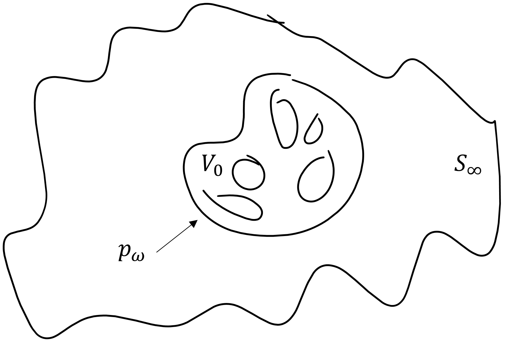
Denote the incident wave as \(p_i (\vec{r})\) (which is not necessarily planar). Further, consider an unbounded medium, which allows for the use of the free-space Green's function, \(g(\vec{r}|\vec{r}_0) = e^{ik|\vec{r} - \vec{r}_0|}/{4\pi |\vec{r} - \vec{r}_0|}\). Then, the solution of the inhomogeneous Helmholtz equation, with \(f(\vec{r})\) as defined above, is \begin{align*} p_\omega(\vec{r}) = \int_V f(\vec{r}_0) g(\vec{r}|\vec{r}_0) dV_0 + I_\infty(\vec{r})\,, \end{align*} where \begin{align*} I_\infty(\vec{r}) &= \oint \bigg[ g(\vec{r}|\vec{r}_0) \frac{\partial p_\omega(\vec{r}_0)}{\partial n_0} + p_\omega(\vec{r_0})\frac{\partial g(\vec{r}|\vec{r}_0)}{\partial n_0} \bigg]dS \,. \end{align*} Since the surface is \(S_0 = S_\infty\), and since \(V_0\) is finite, then \begin{align*} I_\infty(\vec{r}) = p_i(\vec{r}), \end{align*} which is to say that the pressure field infinitely far away from the scatterer is simply the field due to the incident wave, not the scattered wave. Therefore, the total field becomes \begin{align} p_\omega(\vec{r}) &= p_i(\vec{r}) + \int_{V_0} \left\{ k^2 \gamma_B (\vec{r}) p_\omega(\vec{r}_0) - \gradient_0 \cdot \left[\gamma_\rho(\vec{r}) \gradient_0 p_\omega(\vec{r}_0)\right] \right\}g(\vec{r}|\vec{r}_0) dV_0 \label{scat4}\tag{4} \end{align} By the vector calculus identity \(\divergence(a\vec{b}) = a \divergence \vec{b} + \vec{b} \cdot \gradient a\), the second term in Eq. \eqref{scat4} can be written as (identifying \(\vec{b} \equiv \gamma_\rho\gradient p\) and \(a \equiv g\) in the identity), \begin{align*} \divergence (\gamma_\rho \gradient p) g = \divergence [\gamma_\rho(\gradient p)g] - \gamma_\rho \gradient p \cdot \gradient g\,. \end{align*} Applying the divergence theorem to the volume integral of the term \(\divergence [\gamma_\rho(\gradient p)g] \) results in \begin{align*} \int_{V_0} \divergence \{\gamma_\rho (\vec{r}_0) [\gradient p_\omega(\vec{r}_0)]g(\vec{r}|\vec{r}_0)\} dV_0 &= \oint \gamma_\rho(\vec{r}_0) \frac{\partial p_\omega}{\partial n_0}g(\vec{r}|\vec{r}_0)dS_0, \end{align*} which vanishes for \(S_0\) at \(\infty\) and finite \(V_0\), because \(\gamma_\rho = 0\) at \(\infty\). After making these considerations, Eq. \eqref{rayleigh4} becomes \begin{align}\label{rayleigh5}\tag{5} \boxed{p_\omega(\vec{r}) = p_i(\vec{r}) + \int_{V_0} \left[ k^2 \gamma_B(\vec{r}_0) p_\omega(\vec{r}_0) g(\vec{r}|\vec{r}_0) + \gamma_\rho(\vec{r}_0) \gradient_0p_\omega (\vec{r}_0) \cdot \gradient_0 g(\vec{r}|\vec{r}_0) \right]dV_0\,.} \end{align} Equation \eqref{rayleigh5} can be thought of as the contribution of monopoles and dipoles, \begin{align*} p_\omega &= -ik\rho_0c_0 Q g(\vec{r}|\vec{r}_0) = \text{ monopole}\\ p_\omega &= -ik\rho_0c_0 \vec{D} \cdot \gradient g(\vec{r}|\vec{r}_0) = \text{ dipole}\,, \end{align*} where \(D = |\vec{D}| = Qd\). Thus set \begin{align*} k^2 \gamma_B p_\omega \Delta V &= -ik\rho_0c_0 \Delta Q\\ \gamma_\rho \gradient p_\omega \Delta V &= -ik\rho_0c_0 \Delta \vec{D}\,, \end{align*} which leads to \begin{align*} q &= \frac{\Delta Q}{\Delta V} = \frac{\text{volume velocity}}{\text{unit volume}} = \frac{ik}{\rho_0c_0} \gamma_B(\vec{r}) p_\omega(\vec{r}) \\ \vec{d} &= \frac{\Delta \vec{D}}{\Delta V} = \frac{\text{dipole strength}}{\text{unit volume}} = -\frac{1}{ik\rho_0c_0} \gamma_\rho(\vec{r}) \gradient p_\omega(\vec{r})\,. \end{align*} Then Eq. \eqref{rayleigh5} can be written in terms of monopole strengths and dipole moments: \begin{align*} \boxed{p_\omega (\vec{r}) = p_i(\vec{r}) - ik\rho_0c_0 \int_{V_0} [q(\vec{r}_0) g(\vec{r}|\vec{r}_0) + \vec{d}(\vec{r}_0) \cdot \gradient_0 g(\vec{r}| \vec{r}_0)] dV_0 \,.} \end{align*}
Using the results of the previous section, several scattering approximations are now made. These approximations are increasingly liberal. The far-field approximation is implicit and simply considers in far-field limit of the exact theory. The Born approximation builds on the far-field approximation and further assumes that the scattered field is much weaker than the incident field, making the scattering theory implicit. Rayleigh scattering builds on the Born approximation (though not historically) and further assumes the scatterer is subwavelength.
The far field of the scattered wave is now considered, as illustrated schematically below:
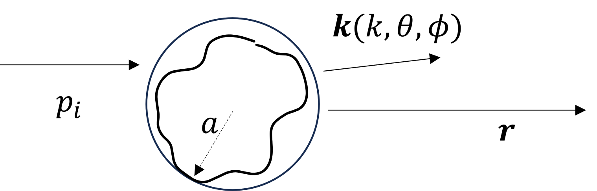
To describe the scattered wave in the far field, consider the free-space green's function \begin{align*} g(\vec{r}|\vec{r}_0) = \frac{e^{ik|\vec{r} - \vec{r}_0|}}{4\pi |\vec{r} - \vec{r}_0|}\,, \end{align*} where \begin{align*} |\vec{r}- \vec{r}_0| &= \sqrt{(\vec{r} - \vec{r}_0)\cdot (\vec{r}- \vec{r}_0)} = \sqrt{r^2 - 2\vec{r}\cdot \vec{r}_0 + r_0^2} = r \left(1- 2\frac{\vec{r}\cdot \vec{r}_0}{r^2} + \frac{r_0^2}{r^2} \right)^{1/2}\,. \end{align*} For \(r\gg a\), where \(a\) is the characteristic radius of the scatterer, binomial expansion and retention to linear order of the above expression leads to \begin{align*} |\vec{r} - \vec{r}_0| \simeq r - \vec{e}_r \cdot \vec{r}_0\,,\quad \vec{e}_r = \vec{r}/r \,, \end{align*} so \begin{align*} k|\vec{r} - \vec{r}_0| \simeq kr - \vec{k}_s \cdot \vec{r}_0\,, \end{align*} where \(\vec{k}_s = k \vec{e}_r = \vec{k}(k,\theta,\phi)\) is the wave vector in the direction of the scattering. So the Green's function and its gradient become \begin{align*} g(\vec{r}|\vec{r}_0) \simeq \frac{e^{ikr}}{4\pi r} e^{-i\vec{k}_s \cdot \vec{r}_0}\,,\quad \gradient_0 g = -i\vec{k}_sg\,. \end{align*} The total field is then \begin{align}\label{field1}\tag{1} p_\omega(\vec{r}) &= p_i(\vec{r}) + p_s(\vec{r}), \end{align} where now the scattered field is \begin{align*} p_s(\vec{r}) = k^2 \frac{e^{ikr}}{4\pi r} \int \left[ \gamma_B(\vec{r}_0) p_\omega(\vec{r}_0) - \gamma_\rho(\vec{r}_0) \frac{i\vec{k}_s}{k^2} \cdot \gradient_0 p_\omega (r_0) \right] e^{-i\vec{k}_s \cdot \vec{r}_0}dV_0\,. \end{align*} The above result can be written as a 3D Fourier transform: \begin{align}\label{field2}\tag{2} p_s(\vec{r}) &= k^2 \frac{e^{ikr}}{4\pi r} \int q_s(\vec{r}_0) e^{-i\vec{k}_s \cdot \vec{r}_0} dV_0\,, \end{align} where \begin{align}\label{field3}\tag{3} q_s(\vec{r}) \equiv \gamma_B (\vec{r}) p_\omega(\vec{r}) -\gamma_\rho(\vec{r}) \frac{i\vec{k}_s}{k^2} \cdot \gradient p_\omega(\vec{r})\,. \end{align} As such, Eqs. \eqref{field2} can be written using the old notation of Fourier transforms: \begin{align*} p_s(\vec{r}, \theta,\phi) = k^2 \frac{e^{ikr}}{4\pi r} \mathcal{F}_{\mathrm{3D}}\{ q_s(\vec{r}) \}_{\vec{k} = \vec{k}_s}\,. \end{align*} Note that Eqs. \eqref{field2} and \eqref{field3} are still implicit. That is to say, the scattered field is given in terms of the scattered field.
If in Eq. \eqref{field1} the scattered field is much weaker than the incident field, i.e., \(|p_s| \ll |p_i|\), then \(p_s\) is a small correction to \(p_i\), so let \(p_\omega = p_i\) in Eq. \eqref{field3}: \begin{align}\label{field5}\tag{5} q_s(\vec{r}) = \gamma_B(\vec{r}) p_i(\vec{r}) - \gamma_\rho(\vec{r}) \frac{i\vec{k}_s}{k^2} \cdot \gradient p_i (\vec{r})\,. \end{align} Thus the solution given by Eq. \eqref{field2} is now explicit.
In this approximation, it is assumed that the scattering is in the far field, satisfies the Born approximation, and is additionally subwavelength, i.e., that \(ka \ll 1\). This allows for \(|\vec{k}_s \cdot \vec{r}_0| \ll 1\) in Eq. \eqref{field2}, resulting in \begin{align}\label{field6} \tag{6} p_s(\vec{r}) = k^2 \frac{e^{ikr}}{4\pi r} \int q_s(\vec{r}_0)dV_0 \,. \end{align} Assuming the incident field is a plane wave \(p_i(\vec{r}) = p_0 e^{i\vec{k}_i \cdot \vec{r}}\), Eq. \eqref{field5} becomes \begin{align*} q_s(\vec{r}) = \left[\gamma_B(\vec{r}) + \gamma_\rho (\vec{r}) \frac{\vec{k}_s \cdot \vec{k}_i}{k^2}\right] p_i(\vec{r})\,. \end{align*} The relationship between \(\vec{k}_s\) and \(\vec{k}_i\) is shown below:
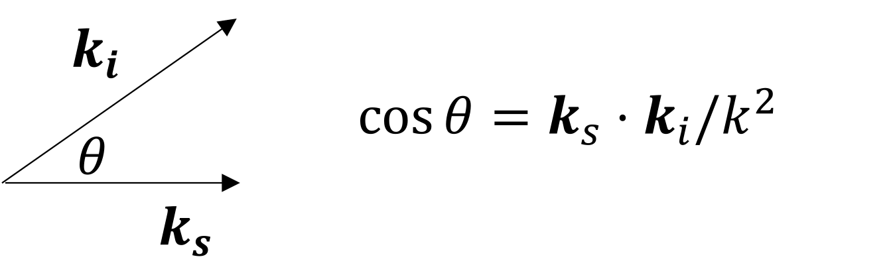
Writing \(q_s\) in terms of the angle \(\theta\) subtending the scattered and incident wave vectors results in \begin{align}\label{field7}\tag{7} q_s(\vec{r}) = \left[\gamma_B(\vec{r}) + \gamma_\rho (\vec{r}) \cos\theta\right] p_i(\vec{r})\,. \end{align} Notating the spatial average of a function \(f\) as \(\langle f(\vec{r}) \rangle = \frac{1}{V} \int f(\vec{r}) \, dV\), and noting that for \(ka \ll 1\) the incident wave is \(p_i(\vec{r}_0) \simeq p_0\) for \(ka \ll 1\), Eqs. \eqref{field6} and \eqref{field7} are combined: \begin{align}\tag{8}\label{field8} \boxed{p_s(r,\theta) = p_0 k^2 V_0 \frac{e^{ikr}}{4\pi r} \left[ \langle \gamma_B \rangle + \langle \gamma_\rho \rangle \cos\theta \right]\,.} \end{align} The scattered intensity is therefore \begin{align*} I_s(r,\theta) &= \frac{|p_s|^2}{2\rho_0c_0} \propto k^4 = \frac{1}{\lambda^4}\,, \end{align*} which is a hallmark of Rayleigh scattering.
Rayleigh scattering explains why the sky is blue. Red light has a longer wavelength than blue light: \begin{align*} \left(\frac{\lambda_\text{red}}{\lambda_\text{blue}}\right)^4 = \left( \frac{700 \text{ nm}}{400 \text{ nm}}\right) \sim 10\,. \end{align*} Therefore, the intensity of red light scattered by the molecules in the atmosphere is \(10\) times weaker than that of the scattered blue light.
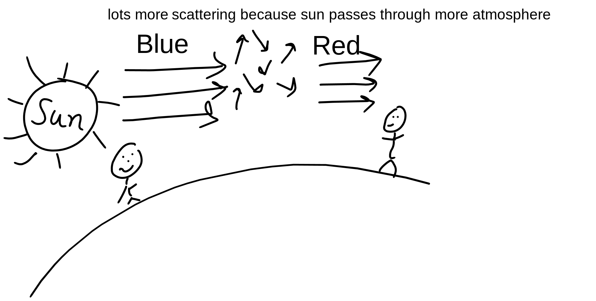
The sky appears yellow, orange, and red during sunset and sunrise because the sunlight passes through more atmosphere when it is near the horizon. As the sunlight passes through this atmosphere, is blue and green light is scattered away, leaving yellow, orange, and red light behind.
The same effect explains why the moon appears red during lunar eclipses.
In this section and the following, the theory and approximations derived above are applied to calculating the scattered field due to bubbles in different contexts. This section focuses on scattering from bubbles below resonance.
The resonance frequency of a bubble can be calculated using a lumped-element approximation, as was presented in Acoustics I. The result is \[f_0 = \frac{1}{2\pi a}\sqrt{3\kappa P_0/\rho_0}\,,\] where \(a\) is the bubble radius, \(P_0\) is the atmospheric pressure, and \(\kappa\) is the polytropic index, which is a continuous function having values between \(1\) and \(1.4\) (unlike \(\gamma\)), such that \(p_\text{gas} = \rho_\text{gas}^\kappa\). The subscripted \(0\)s in these equations refer to the properties of the liquid surrounding the bubble.
For bubbles, the scattering parameters introduced in the "Scattering from inhomogeneities" section have the values \begin{align*} \gamma_B &= \frac{B_0}{B_\text{gas}} - 1 \simeq \frac{B_0}{B_\text{gas}} = \frac{\rho_0c_0^2}{\kappa P_0} = 1.54 \times 10^{4}\,, \text{air bubble in water, } \kappa = 1.4\\ \gamma_\rho &= 1 - \frac{\rho_0}{\rho_\text{gas}} \simeq = -\frac{\rho_0}{\rho_\text{gas}} = -825\,, \text{air in water} \end{align*} Since \[|\gamma_B/\gamma_\rho| = 19 \gg 1,\] the density contrast factor \(\gamma_\rho\) can be ignored. Thus in the Born approximation, the scattered field is given in terms of the bulk modulus contrast factor: \begin{align} p_s(\vec{r}) &= k^2 \int \gamma_B(\vec{r}_0) p_i(\vec{r}_0) g(\vec{r}| \vec{r}_0) dV_0 \notag\\ &= k^2 \frac{\rho_0c_0^2}{\kappa P_0}\int \phi_B(\vec{r}_0) p_i(\vec{r}_0) g(\vec{r}| \vec{r}_0) dV_0\label{bub1}\tag{1}\,, \end{align} where \(\phi =\) volume of gas/unit volume, regarded as the "volume fraction" (or sometimes "void fraction").
The scattered field due to a single bubble, illustrated schematically below, is first considered.
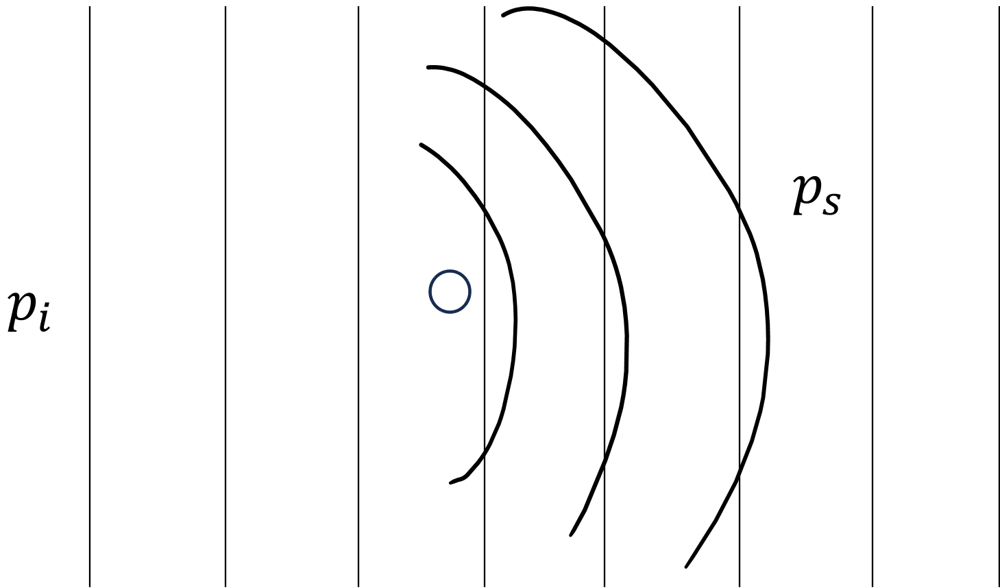
At the resonance frequency \(f_0\) of a bubble, \(ka = 0.014 \ll 1\). That is to say, the bubble is deeply subwavelength and can therefore be described by a \(\delta\) function in space: \[\phi(\vec{r}) = \frac{4}{3}\pi a^3 \delta(\vec{r}) = V_0\delta(\vec{r})\,.\] Therefore, the scattered field given by Eq. \eqref{bub1} is trivial to evaluate by the sifting property: \begin{align*} p_s(r) = k^2 \frac{\rho_0c_0^2}{\kappa P_0} V_0 p_i(0) g(r|0)\,. \end{align*} Since \(p_i(0) = p_0\) and \(g(r|0) = e^{ikr}/4\pi r\), the scattered field is \begin{align*} p_s(r) = \frac{\rho_0\omega^2 V_0}{4\pi \kappa P_0} p_0 \frac{e^{ikr}}{r}\,, \end{align*} or \begin{align*} |p_s(r)/p_0| = \frac{\rho_0 \omega^2 V_0}{4\pi \kappa P_0 r}\,. \end{align*} It is noted that the scattered field is proportional to \(\omega^2\) and inversely proportional to \(r\).
Now the scattered field due to a thin screen of bubbles is considered, illustrated below, where the horizo
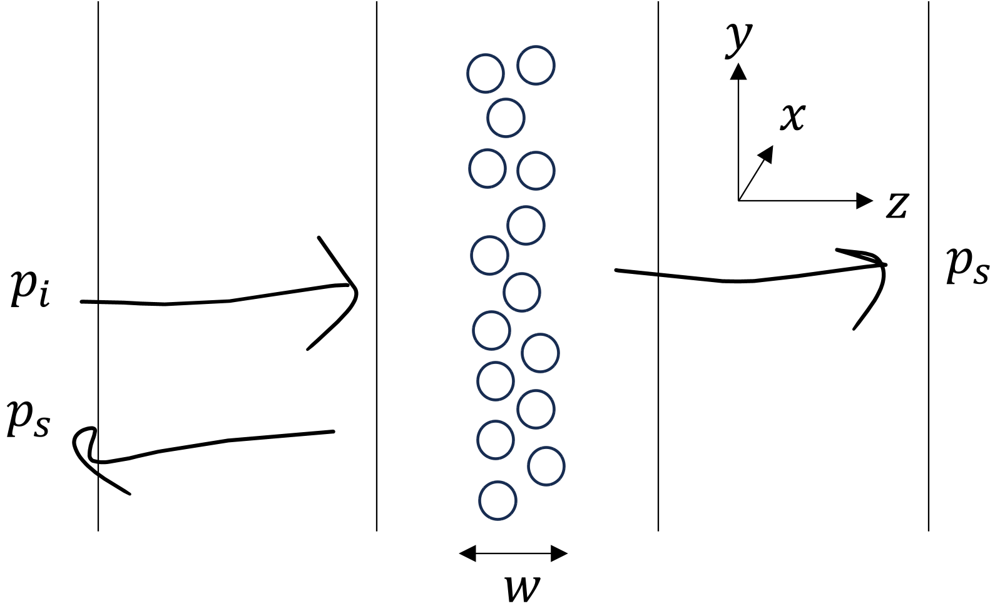
In this case, the volume fraction has the form \begin{align*} \phi(\vec{r}) = \phi(x,y)\,, \quad kw \ll 1\,. \end{align*} Suppose the time-harmonic incident field has the form \(p_i(\vec{r}) = p_0 e^{ikz}\), and that the scatterer coordinates are \[\vec{r}_0 = (x_0,y_0,z_0) = (x_0,y_0,0).\] Thus the incident field at the scatterer (the thin screen of bubbles) is \(p_i(\vec{r}_0) = p_0\). Meanwhile, consider the field coordinate \begin{align*} \vec{r} = (x,y,z) = (0,0,z), \end{align*} for which the 3D free-space Green's function becomes \begin{align*} g(\vec{r}|\vec{r}_0) = \frac{e^{ik\sqrt{x_0+y_0+z^2}}}{4\pi\sqrt{x_0^2 +y_0^2 + z}}\,. \end{align*} Thus Eq. \eqref{bub1} becomes \begin{align*} p_s(z) &= k^2 \frac{\rho_0c_0^2}{\kappa P_0}\frac{p_0 w}{4\pi}\iint \phi(x_0,y_0) \frac{e^{ik\sqrt{x_0+y_0+z^2}}}{4\pi\sqrt{x_0^2 +y_0^2 + z}} dx_0\, dy_0\,. \end{align*} To facilitate the integration, suppose the volume fraction is a constant, \(\phi_0\). That is to say, the thin screen of bubbles is approximated to be a homogeneous medium with volume fraction \(\phi_0\). The integral becomes \begin{align*} p_s(z) = k^2 \frac{\rho_0c_0^2}{\kappa P_0}\frac{p_0 w\phi_0}{4\pi} I(z)\,,\quad I(z) = \int_{0}^{\infty} \frac{e^{ik\sqrt{\rho^2 + z^2}}}{\sqrt{\rho_0^2 + z^2}} 2\pi \rho_0d\rho_0\,, \end{align*} where \(\rho_0 = \sqrt{x_0^2 + y_0^2 }\), and where \(dx_0dy_0 = 2\pi \rho_0d\rho_0\). The integral \(I(z)\) is taken by letting \(u = \sqrt{\rho_0^2 + z^2}\), and thus \(u du = \rho_0d\rho_0\), and \(k \mapsto k+ i\epsilon\): \begin{align*} I &= 2\pi \int_{|z|}^{\infty} e^{i(k + i\epsilon)u}du\\ &= 2\pi \frac{e^{i(k+i\epsilon)u}}{i(k + i\epsilon)} \bigg\rvert_{|z|}^{\infty}\\ &= 2\pi i \frac{e^{ik|z|}}{z}\,,\quad \epsilon \to 0\,. \end{align*} So the scattered field is \begin{align*} p_s(z) = \frac{ik\rho_0c_0^2}{2\kappa P_0} p_0 w \rho_0 e^{ik|z|}\,. \end{align*} The magnitude of the scattering coefficient is \begin{align*} |p_s/p_0| &= \frac{\omega \rho_0c_0}{2\kappa P_0} w\rho_0\\ &= \omega \,\quad \text{ vs. } \omega^2 \text{ for a single bubble}\\ &\equiv |R|\,,\quad \text{ reflection coefficient}\,. \end{align*}
The previous two cases have considered the scattering of sound due to bubbles fairly localized in space. Now the scatterers are considered to be well-distributed throughout the liquid, as illustrated below:
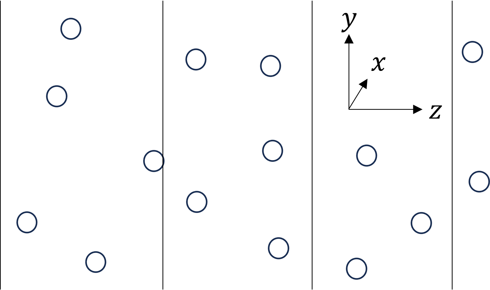
From Eq. \eqref{scat2} from the "Scattering from inhomogeneities" section, the wave equation becomes, upon neglecting \(\gamma_\rho\), \begin{align}\label{bubstar}\tag{\(\star\)} \Laplacian - \frac{1}{c_0^2}\frac{\partial^2 p}{\partial t^2} &= \frac{\gamma_B(\vec{r})}{c_0^2} \frac{\partial^2 p}{\partial t^2} \,. \end{align} To describe the well-distributed collection of bubbles in the medium, the ratio in bulk moduli factor \(\gamma_B\) is set to \[\gamma_B \simeq (\rho_0c_0^2/\kappa P_0)\phi(\vec{r}) = (B_l/B_g)\phi\,,\] where \(\phi\) is constant (equaling the total volume of air divided by the total volume of water). Equation \eqref{bubstar} then becomes \begin{align*} \Laplacian p = \left(1 + \frac{B_l}{B_g} \phi\right) \frac{1}{c_0^2} \frac{\partial^2 p}{\partial t^2} \equiv \frac{1}{c_\text{eff}^2} \frac{\partial^2 p}{\partial t^2}\,, \end{align*} where \[c_\text{eff} = \frac{c_0}{\sqrt{1 + \phi B_l/B_g}}\,. \] This effective sound speed is the so-called Wood model for \(\phi\ll 1\). (The model falls apart for any appreciable \(\phi\), e.g., \(\phi \gtrsim 0.01\), since the underlying physics changes. See the homework problem that investigates this further.) The effective sound speed's dependence on \(\phi\) is sketched below:
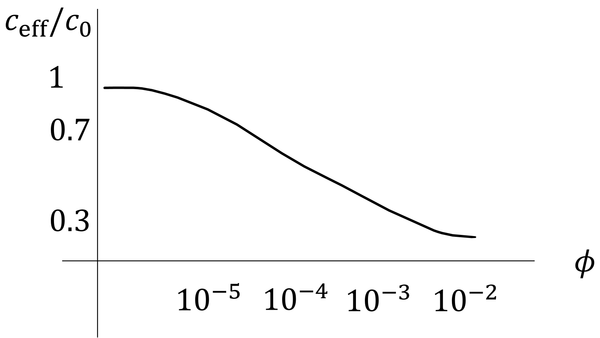
In practical settings in which contrast agents are used (like in biomedical applications), bubbles may have thin shells, as illustrated below:
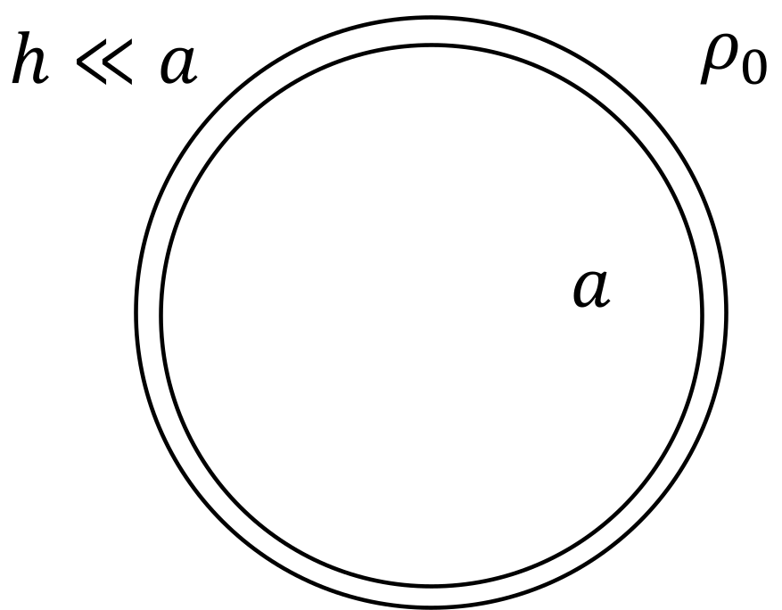
In that case, the bulk modulus becomes (The subscript "CA" stands for ''contrast agents'') \begin{align*} B_g \mapsto B_\text{CA} = \kappa P_0 + 4 (h/a) \mu_\text{sh} \end{align*} where \(\mu_\text{sh}\) is the shear modulus of the the shell, where \(\mu_\text{sh} \ll B_\text{sh}\). So the resonance frequency becomes \begin{align*} f_0 & = \frac{1}{2\pi a} \sqrt{3B_\text{CA}/\rho_0} = \frac{1}{2\pi a} \sqrt{\frac{3}{\rho_0} \left(\kappa P_0 + 4\frac{h}{a} \mu_\text{sh}\right)} \end{align*}
Now a theory for the scattering from bubbles at arbitrary frequencies (not just at frequencies below the bubble resonance frequency) is developed.
Begin with the inhomogeneous wave equation for volume sources [See Blackstock's Fundamentals of Physical Acoustics, Eq. (10-D-10)]: \begin{align*} \Laplacian p - \frac{1}{c_0^2} \frac{\partial^2 p}{\partial t^2} &= -\rho_0 \frac{\partial q}{\partial t}\,, \end{align*} where \(q\) is the ratio of the volume velocity to the unit volume. Let the pressure be \begin{align*} P &= P_0 + p_\omega e^{-i\omega t}\\ V &= V_0 + v_\omega e^{-i\omega t}\\ Q &= \frac{dV}{dt} = Q_\omega e^{-i\omega t} = \text{ volume velocity}\,,\\ n_0 &= \frac{\text{number of bubbles}}{\text{unit volume}}. \end{align*} Then \begin{align*} q_\omega = n_0 Q_\omega\,, \quad Q_\omega = -i\omega v_\omega \,, \end{align*} and \begin{align*} \frac{\partial q}{\partial t} &= -i\omega q_\omega = -i\omega n_0 Q_\omega = -n_0\omega^2 v_\omega\,. \end{align*} Thus a Helmholtz equation is obtained from Blackstock's Eq. (10-D-10): \begin{align}\label{bubprop1}\tag{1} (\Laplacian + k^2)p_\omega = n_0\rho_0\omega^2 v_\omega\,. \end{align} In addition to Eq. \eqref{bubprop1}, an additional equation is needed to relate \(p_\omega\) and \(v_\omega\). To obtain this equation, the bubble dynamics are needed.
The acoustic impedance at the bubble wall of a bubble having volume \(V_0 = 4\pi a^3/3\), surface area \(S_0 = 4\pi a^20\), and radius \(a\) is \begin{align*} Z_\text{ac} = \frac{p_\omega}{-Q_\omega} = \frac{p_\omega}{i\omega v_\omega}\,, \end{align*} where \(Q(t) = \dot{V}(t)\).
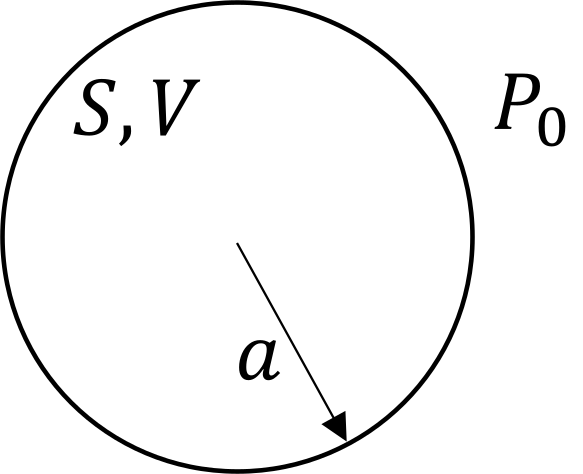
The minus sign is used in front of \(Q_\omega\) because pressure increases with reduced volume. To relate \(p_\omega\) to \(v_\omega\), note that for a spherical wave \begin{align*} Z_\text{ac} = \frac{\text{sp. acoustic impedance}}{\text{area}} = \frac{1}{4\pi a^2} \frac{\rho_0c_0}{1 - 1/ika} + \frac{1}{-i\omega C_\text{ac}}\,, \end{align*} where the first two terms are the radiation impedance, and where the third term is is the bubble compliance \(C_\text{ac} = V_0/\gamma P_0 \to V_0/\kappa P_0\). Noting that the term \begin{align*} \frac{1}{1 - 1/ika} = \frac{-ika}{1 - ika} = -ika(1 -ika)^{-1} = -ika + (ka)^2 + \Order [(ka)^3]\,. \end{align*} The acoustic impedance becomes \begin{align*} Z_\text{ac} = \frac{\rho_0c_0}{4\pi a^2} \left(-i\omega \frac{a}{c_0} + \omega^2 \frac{a^2}{c_0^2}\right) - \frac{\kappa P_0}{i\omega V_0}\,. \end{align*} Equating the above to the expression \(Z_\text{ac} = \frac{p_\omega}{i\omega v_\omega}\) and solving for \(p_\omega/v_\omega\) results in \begin{align}\label{bubble2} \frac{p_\omega}{v_\omega} = -\frac{\kappa P_0}{V_0} F(\omega)\tag{2}\,, \end{align} where \begin{align} F(\omega) &= 1 - \frac{\omega^2}{\omega_0^2} - ik_0a \frac{\omega^3}{\omega_0^3} \tag{3}\label{bubble3}\\ \omega_0^2 &= \frac{3\kappa P_0}{\rho_0 a^2} \,,\quad k_0 = \omega_0/c_0\,,\quad \frac{\rho_0\omega_0^2}{4\pi a} = \frac{\kappa P_0}{V_0}\,. \notag \end{align} Now write \begin{align*} F(\omega ) = 1 -\frac{\omega^2}{\omega_0^2} - i\delta(\omega) \frac{\omega}{\omega_0}\,,\quad \delta(\omega) = k_0a \frac{\omega^2}{\omega_0^2} \end{align*} Then call \(\delta_0 = \delta(\omega_0) = k_0a\), which is the radiation impedance at resonance.
From Eq. \eqref{bubble2}, with \(p_\omega = p_0 =\) constant, then \begin{align} \frac{v_\omega}{V_0} = -\frac{p_0/\kappa P_0}{1 - \omega^2/\omega_0^2 - i\delta \omega/\omega_0}\,. \tag{4}\label{bubble4} \end{align} Equation \eqref{bubble4} is plotted below:
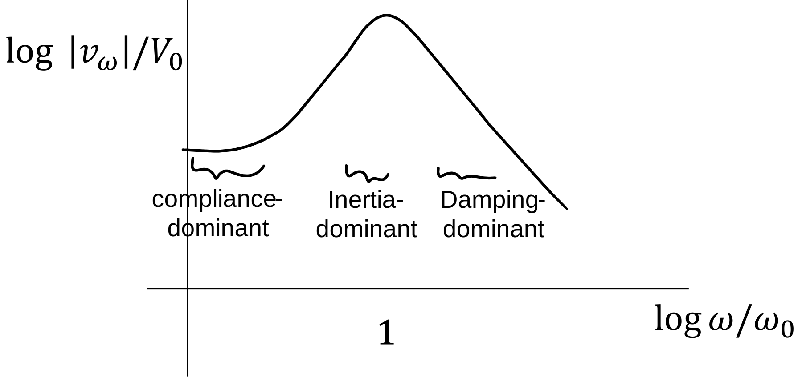
For air and water, at resonance \begin{align*} \frac{1}{\delta} = \frac{1}{k_0a} = \frac{1}{0.014} \sim 72. \end{align*} However, this result only accounts for loss of energy due to radiation. Generally, however, \begin{align*} \delta = \delta_\text{rad} + \delta_\text{vis} + \delta_\text{th}\,, \end{align*} where \begin{align*} \delta_\text{rad} &= k_0a\frac{\omega^2}{\omega_0^2}\\ \delta_\text{visc} &= \frac{4\mu}{\rho_0\omega_0 a^2}\\ \delta_\text{th} &= 3(\gamma-1) l_\text{th}/a \,,\quad a \gg l_\text{th}\,, \end{align*} where \(\gamma = C_p/C_v\), \(l_\text{th} = \sqrt{2\chi/\omega}\) is the boundary-layer thickness, and \(\partial T/\partial t = \chi \Laplacian T\).
Now the phase speed is found by inserting the form of solution \[p_\omega = p_0e^{i\tilde x}\equiv p_0 e^{ikx} e^{-\alpha x}\,.\] Also define \[\tilde{k} = \frac{\omega}{\tilde{c}(\omega)} \equiv k + i\alpha = \frac{\omega}{c(\omega)} + i\alpha(\omega)\,,\] where \(\alpha(\omega) = \Im \tilde{k}\) is the attenuation coefficient, and where \(c(\omega) = \omega/k = \omega/\Re \tilde{k}\) is the phase speed. Ignoring losses, e.g., \(\delta =0\), Eq. \eqref{bubble5} becomes \begin{align*} \frac{\tilde{c}(\omega)}{c_0} &= \left(1 + \frac{\phi b}{1 - \omega^2/\omega_0^2}\right)^{-1/2} = \left(\frac{1 - \omega^2/\omega_0^2 + \phi b}{1 - \omega^2/\omega_0^2}\right)^{-1/2}\\ &= \sqrt{\frac{1 - \omega^2/\omega_0^2}{1 - \omega^2/\omega_0^2 + \phi b}}\\ &\simeq \frac{1}{\sqrt{1+ \phi b}}\,,\quad \omega^2 \ll \omega_0^2 \,,\quad \text{Wood's relation, pure compliance}\\ &\simeq 1 \quad \omega^2 \gg \omega_0^2\,,\quad \text{hard bubble}\\ &= -i\sqrt{\frac{\omega^2/\omega_0^2 - 1}{1 + \phi b - \omega^2/\omega_0^2}}\,,\quad 1 < \omega/\omega_0 < \sqrt{1 + b\phi}\,. \end{align*}
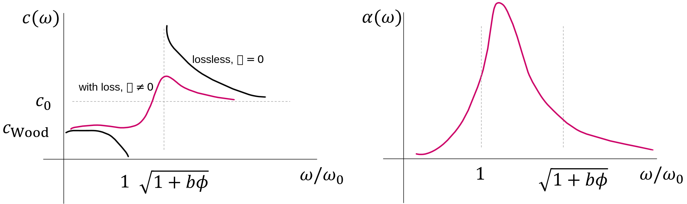